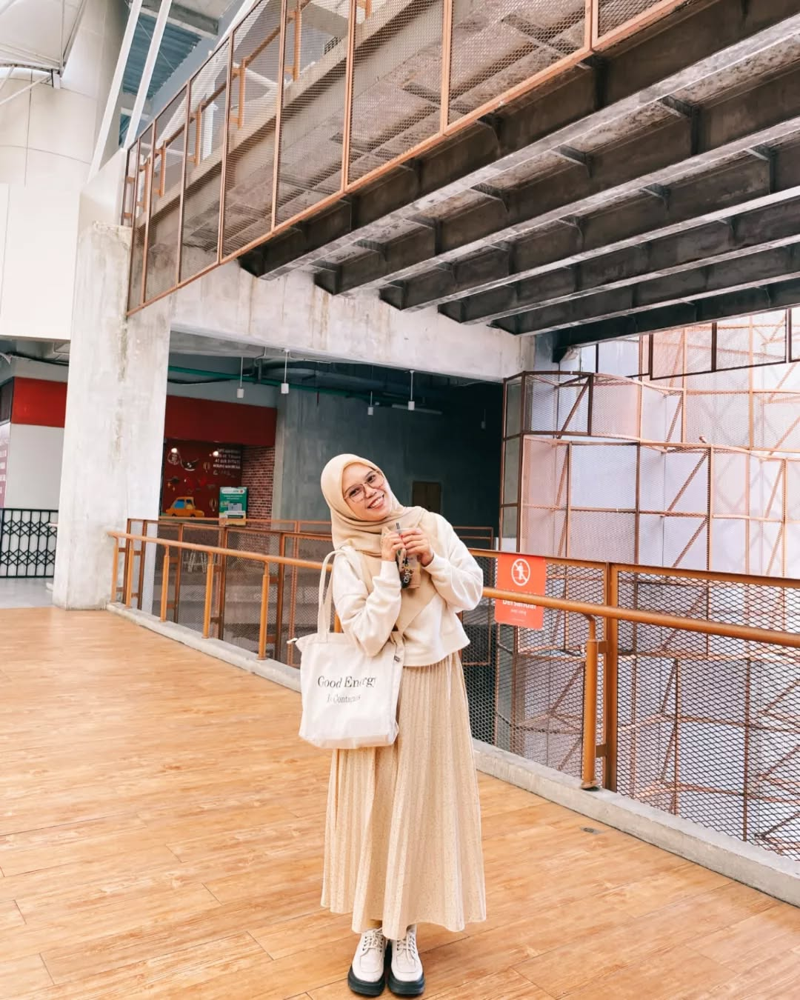

Siti Nur Aeni Far Ain Lahir pada tanggal 20 Agustus 2000 dan merupakan lulusan dari Universitas Negeri Gorontalo jurusan Agroteknologi. Kreatif, imajinatif dan bertanggung jawab adalah cerminan diri saya. Hal ini dapat dilihat dari pengalaman saya sebagai mahasiswi aktif dari berbagai organisasi, forum serta menjadi Delegasi diberbagai kompetisi. Saya memiliki minat di bidang Pertanian (Analisis Unsur Hara Tanah Suatu Lahan, Budidaya Tanaman dan Manajemen Pertanian), Penelitian Riset, Kepenulisan, Desain Grafis, Konten Kreator, Voice Over, dan Publick Speaking. Selain itu, saya merupakan tipikal orang yang mudah beradaptasi, kondisional, cepat dan tanggap, belajar hal-hal baru, mudah improvisasi, memiliki komunikasi yang baik dan cepat belajar.
UNIVERSITAS NEGERI GORONTALO 2018-2023
Jenjang Sarjana, Jurusan Agroteknologi, Konsentrasi Tanah (Soil) IPK 3.67.
Skillset Content Planning, Drafter, Voice Over, Internal Communication
Toolset Microsoft Office (Word, Excel, PowerPoint)
UKM LITERASI UNIVERSITAS NEGERI GORONTALO – Gorontalo, Indonesia
DUTA BACA UNIVERSITAS NEGERI GORONTALO – Gorontalo, Indonesia
KOMUNITAS EKSPEDISI JINGGA – Gorontalo, Indonesia
KOMUNITAS RUANG EDIT - Indonesia
OTHER ACTIVITIES – Gorontalo, Indonesia
BOOK/ BOOK CHAPTER
Ain, S. N. A. F., Damopolii, Y., Katili, N. A., dkk. (2018). Dari Kata Menjadi Karya. Ideas Publishing, Gorontalo.
Desain Typografi adalah seni dan teknik mengatur huruf untuk menciptakan komposisi visual yang menarik, mudah dibaca, dan efektif dalam menyampaikan pesan. Dalam desain grafis, tipografi bukan sekadar tulisan, tetapi juga.
seni dan teknik mengatur huruf untuk menciptakan komposisi visual yang menarik, mudah dibaca, dan efektif dalam menyampaikan pesan. Dalam desain grafis, tipografi bukan sekadar tulisan, tetapi juga.
seni dan praktik menciptakan elemen visual untuk menyampaikan pesan atau informasi secara efektif dan menarik. Desain ini menggabungkan teks, gambar, warna, dan elemen visual lainnya.
seni, teknik, dan proses menangkap gambar menggunakan cahaya yang ditangkap oleh kamera, baik digital maupun analog (film).
Kirim Pesan Untuk Memberokan Saran Kepada saya
{kind=link}
{kind=link}
{kind=link}
{kind=link}
{kind=link}
{kind=link}
{kind=link}
{kind=link}
{kind=link}
{kind=link}